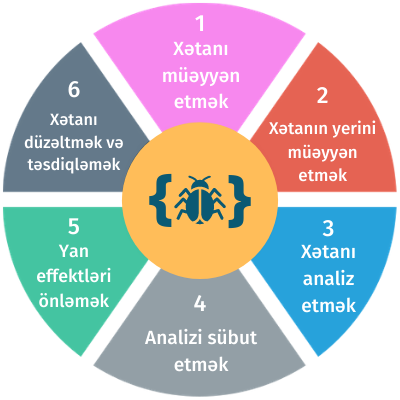

Terminlər
Saytda rastlaşdığınız terminlərin izahları
C
CLI (Terminal İnterfeysi)
CLI (Command Line Interface) - kompüterə sətirbəsətir əmr vermək üçün istifadə edilən interfeys. CLI-a verilən bu əmrlər bir-bir icra edilir və əsasən bu əmrlər əməliyyat sistemi ilə bağlı olur. Günümüzdə əməliyyat sistemlərində Terminal İnterfeysi “Shell” olaraq istifadəçilərə təqdim olunur.
D
Debaq (debug)
Xətaların (bugs) proqramdan tapılıb düzəldilməsi və ya silinməsi prosesidir. Kompüter proqramlarının debug olunması mürəkkəb proses olduğu üçün müxtəlif debug metodları meydana gəlib. Bu metodlara misal kimi interaktiv debug (interactive debugging), hesabat fayllarının analizi (log file analysis), birgə test (unit testing) və s. göstərmək olar. Böyük həcmli proqramları adətən kiçik hissələrə bölüb debug etmək daha məqsədyönlüdür.
Qeyd. Pythonun IDLE mühitinin özündə debugger funksiyası mövcuddur.
F
Faylın yolu (Path)
Əsasən “faylın yolu” dedikdə müəyyən bir faylın fayl sistemində harada yerləşməsini bildirən sətir tipli məlumat nəzərdə tutulur. Bu məlumatda faylın sərt diskdə qovluq iyerarxiyasında dəqiq yeri göstərilir, və qovluqların adı biri-birindən xüsusi təyinatlı simvollar (əsasən “\”, “/” və ya “:”) vasitəsilə ayrılır.H
Hash Funksiyası
Hash Funksiyası (Hash Function) ixtiyari qiymətləri məhdud qiymətlər çoxluğu ilə əlaqələndirən alqoritmə deyilir. Bu əlaqələr arxa planda "hash table" adlı cədvəldə qurulur. Şəkildə gördüyünüz cədvəl sətir tipində olan məlumatlarla məhdud ədədlər çoxluğunu əlaqələndirən bir “hash table”a nümunə ola bilər. Sol tərəfdəki sütuna ona görə “ixtiyari qiymətlər” deyirik ki, burada sonsuz sayda mümkün qiymət ola bilər. Sağ tərəfdəki sütuna ona görə “məhdud qiymətlər” deyirik ki, buradakı ədədi qiymətlərin başlanğıcı (0) və sonu (511) mövcuddu. Hash funksiyaları istənilən qaydada yaradıla bilər və bir Hash funksiyasının nəticəsi ilə digər Hash funksiyasının nəticəsi eyni olmayacaq. Əgər fikir verdinizsə, biz sonsuz elementlər çoxluğunu sonlu elementlər çoxluğuna bu cür “xəritələməyə” (mapping) çalışdıqda nə vaxtsa toqquşma baş verə bilər və bu toqquşmalara “hash collision” deyilir. Yaxşı Hash funksiyasını xarakterizə edən parametr onun toqquşma yaratma ehtimalının az olmasıdır. Hash funksiyaları müxtəlif data strukturlarında, databazalarda, kriptoqrafiyada və s. yerlərdə geniş tətbiq olunur.İ
İnterpretator vs Kompilyator
Kompüter proqramları adətənyüksək səviyyəli proqramlaşdırma dillərindətərtib edilir və bu dillərdə yazılan kodlar bizim üçün daha anlaşıqlı şəkildədir. Yazılan bu kodlara mənbə kodu (source code) deyilir. Biri də var maşın kodu (machine code). Bu kod 0 və 1-lərə əsalanır. Yəni kompüterlər mənbə kodunu yox, məhz maşın kodunu "başa düşür". Kompüterin mənbə kodunu "başa düşməsi" üçün, yəni mənbə kodunu maşın koduna çevirmək üçün interpretator və kompilyator adlanan çeviricilərdən (translator və ya language processor) istifadə edilir.İnterpretator mənbə kodunu maşın koduna sətirbəsətir çevirir. Yəni yazılan koddakı hər bir ifadəni oxuyur, analiz edir, sonra çevirir. Bu da o deməkdir ki, interpretatordan istifadə edən proqramlaşdırma dillərində yazılan kodun bir neçə xətası olsa belə, icra zamanı yalnız bir xəta görəcəyik. İnterpretator mənbə kodunu analiz etməyə az vaxt sərf edir, debug prosesi asan olur, lakin proqramın ümumi icra müddətinin sürəti zəifləyir.
Kompilyator isə bütün kodu bir dəfə oxuyur və bütün xətaları birgə göstərilir. Əgər xəta olmasa, onda kodu maşın koduna çevirir və sonra nəticəni göstərir. Kompilyator interpretatordan fərqli olaraq mənbə kodunu analiz etməyə çox vaxt sərf edir. Əvəzində isə proqramın ümumi icra müddəti daha sürətli olur.
Python, Ruby, Perl kimi dillər interpretatordan, C, C++, Java kimi dillər isə kompilyatordan istifadə edir.
Qeyd. Python interpretasiya dil hesab olunsa da, əslində o, həm də kompilyasiya olunan dildir. Belə ki, mənbə kodları ilk öncə kompilyasiya olunaraq baytkodlara (.pyc fayllar) çevrilir. Daha sonra baytkodların mərkəzi prosessor (CPU) tərəfindən “başa düşülməsi” üçün dövrəyə Python Virtual Machine (PVM) girir. Bu virtual maşının köməkliyi ilə baytkodlar icra olunur (execute).
K
Konstruktor
Obyekt Yönümlü Proqramlaşdırmada müəyyən bir sinfin obyekti yaradılarkən işə düşən prosedurdur. Konstruktorların vəzifəsi aid olduqları sinfə mənsub olan bir obyekt yaradıldıqda onun parametrlərinə müvafiq qiymətlər vermək və onları istifadəyə hazır etməkdir.M
Mənbə kodu vs maşın kodu
Kompüter proqramları adətən yüksək səviyyəli proqramlaşdırma dillərində tərtib edilir və bu dillərdə yazılan kodlar bizim üçün daha anlaşıqlı şəkildədir. Yazılan bu kodlara mənbə kodu (source code) deyilir. Mənbə kodu maşın koduna kompilyator və ya interpretator vasitəsilə çevrilir (tərcümə edilir).Maşın dili isə bütün proqramlaşdırma dillərinin ən təməlidir. Hər hansı dildə yazdığımız proqramları biz başa düşürük, kompüter deyil. Yazdığımız proqramlar maşın dili vasitəsilə 2-lik say sisteminə (0 və 1) çevrilir və bu koda maşın kodu və ya obyekt kodu deyilir.
O
Obyekt Yönümlü Proqramlaşdırma
OYP (OOP - Object Oriented Programming) proqramlaşdırmanın ən mühüm paradiqmalarından biri olub, yazılan proqramda bir sıra məlumatların “obyekt” anlayışı altında sistemləşməsini bildirir. Obyektlər özlərində məlumat (atributlar) və prosedurlar (metodlar) saxlayaraq, kompleks kodlarda real həyatdakı obyektlərarası əlaqələri modelləşdirməyə xidmət edirlər. Hal-hazırda məşhur proqramlaşdırma dillərinin əksəriyyəti (C++, Python, Java) OYP-ni dəstəkləyir.P
Paradiqma
Proqramçıların əsas vəzifələrindən biri yazdıqları kodların mürəkkəbliyini aradan qaldırmaqdır. Bunun üçün onlar müxtəlif proqramlaşdırma texnikalarını və ya metodları tətbiq edir. Bu texnika və metodlar da proqramlaşdırma dillərinin xüsusiyyətlərindən asılıdır. Paradiqma proqramlaşdırma dillərini məhz bu xüsusiyyətlər əsasında təsnifləşdirməkdir. Əsas proqramlaşdırma paradiqmalarına daxildir:
S
Statik dillər vs Dinamik dillər
Statik dillərdə dəyişənlərin data tipi öncədən elan olunur. Məsələn, sətir elan edərkən nəzərdə tutulan qiymətin (dəyərin) önünə string, tam ədəd təyin edərkən int, həqiqi ədədlərdə isə float yazılır və s. Buna görə də dəyişənin hansı tipdə oduğunu proqram hələ icra olunmazdan qabaq bilirik. Java, C, C++, C#, FORTRAN, Pascal və s. kimi proqramlaşdırma dilləri statik dillər hesab olunur. Bu dillər həm də kompilyasiya olunan dillər olduğundan kompilyator data tipini məhz kodun kompilyasiyası zamanı yoxlayır və data tipini sonradan dəyişməyə icazə vermir.Dinamik dillərdə isə dəyişənlərin data tipi proqram icra olunan zaman (run-time) elan olunur. Dinamik dillərə Python, PHP, Ruby, JS və s. kimi dilləri misal göstərmək olar və bu dillər də interpretasiya olunan dillər olduğundan bir dəyişəni bir neçə dəfə dəyişib yenidən mənimsədə bilirik.
V
Virtual yaddaş (virtual memory)
Operativ yaddaşın (RAM) həcmi hər nə qədər məhdud olsa da, o tam olaraq “bitmir”. Belə ki, məlumatları emal etmək üçün operativ yaddaşın həcmi çatmadıqda kompüterin əməliyyat sistemi həmin məlumatları sərt disk yaddaşına müvəqqəti olaraq köçürərək fiziki yaddaş çatışmazlığını kompensasiya edir. Həmin ayrılmış hissə virtual yaddaş adlanır.Y
Yüksək səviyyəli vs aşağı səviyyəli proqramlaşdırma dilləri
Kompüter proqramları adətən yüksək səviyyəli proqramaşdırma dillərində (High-level languages) yazılır. Aşağı səviyyəli proqramlaşdırma dillərindən (Low-level languages) əsas üstünlüyü məhz budur ki, bu dillərdə proqramları yazmaq, oxumaq, dəstəkləmək asandır. Yəni bu dillərdə yazılan kodlar bizim üçün daha anlaşılandır (human-firendly). C, C++, Java, Python, Ruby, PHP və s. dillər yüksək səviyyəli proqramlaşdırma dillərinə misal ola bilər.Aşağı səviyyəli proqramlaşdırma dilləri kompüterin dilinə (maşın koduna) daha yaxındır. Bu dillərdə yazılan proqramlar interpretasiya və ya çevrilmə olmadan birbaşa icra edilir. Bu da öz növbəsində proqramın icrasını çox sürətli edir. Bu dillərdə 0 və 1-dən, müxətlif simvollardan və hərflərdən istifadə edilir. Əsasən mikro-kontrollerlər üçün əməliyyat sistemlərinin yazılmasında istifadə edilir. İki əsas nümayəndəsi Assembler və maşın kodu hesab olunur.